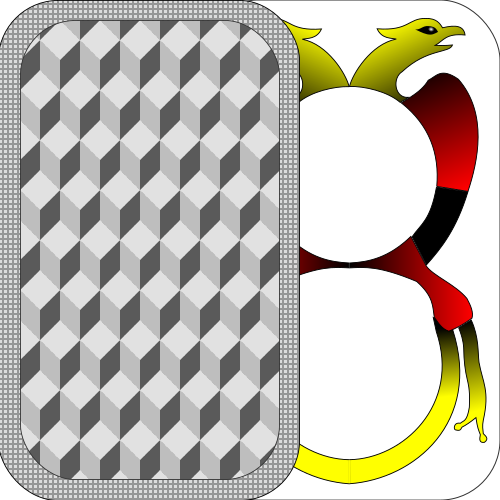
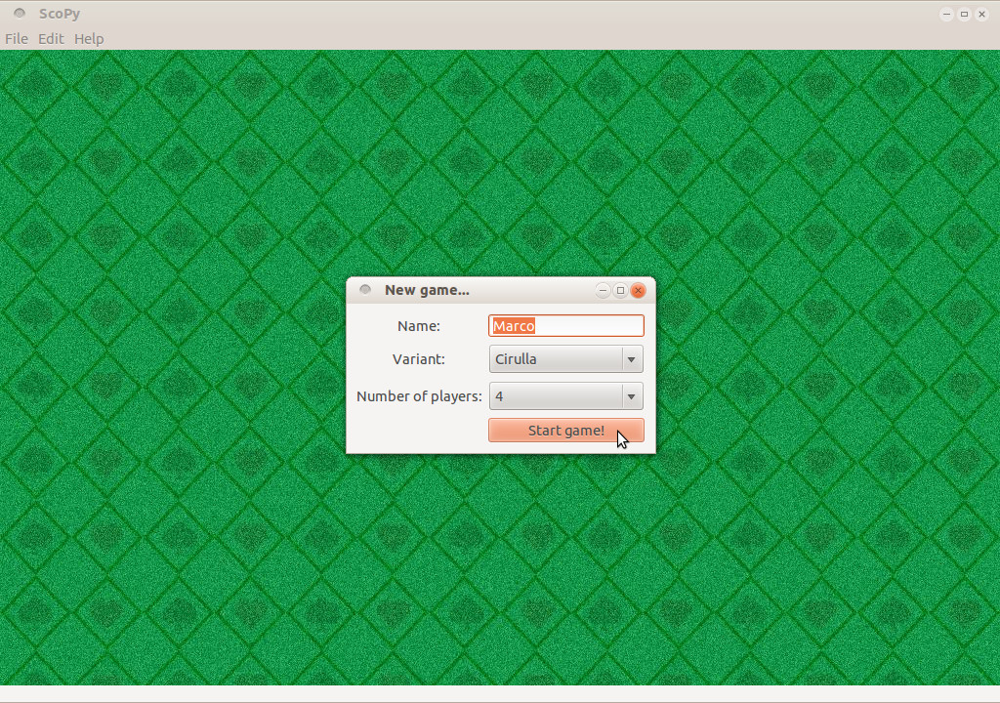
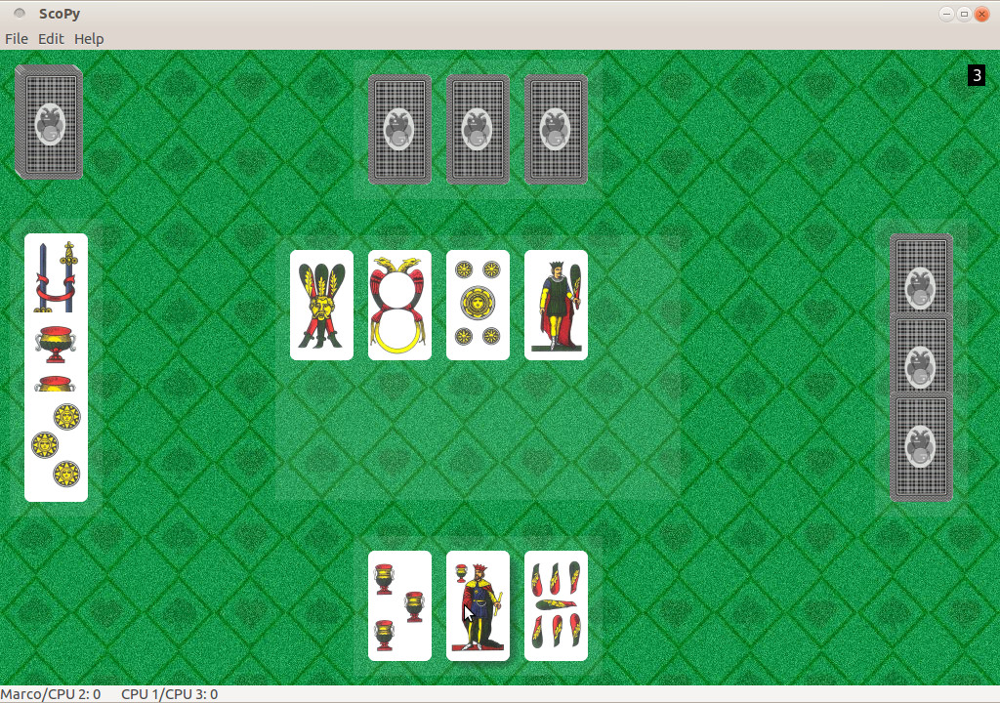
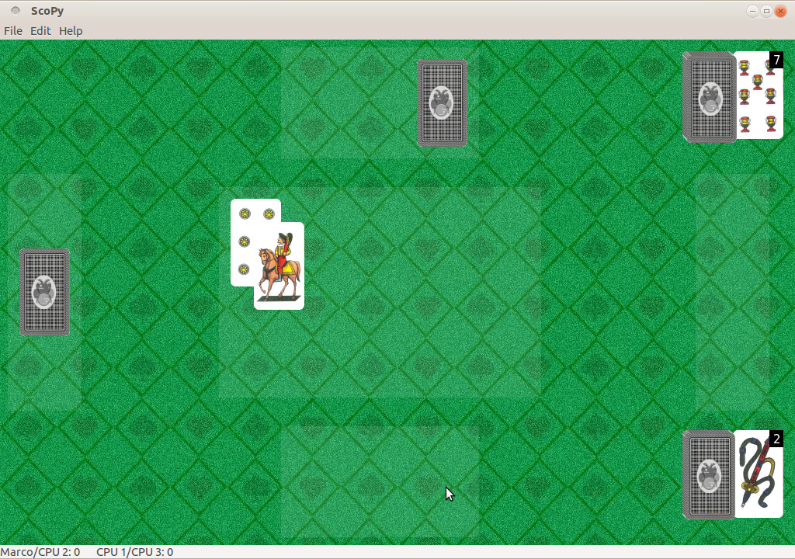
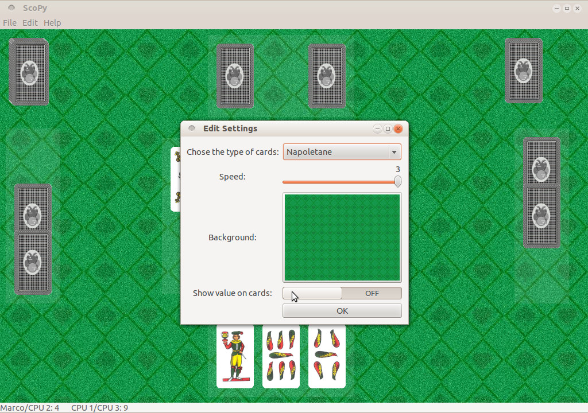

//
Cos'è ScoPy?

ScoPy è un programma che permette di giocare al famoso gioco della scopa.
Attualmente è possibile giocare 1 contro 1 con il computer o in quattro, in coppia con un computer.
Sono presenti 5 varianti di gioco:
- Classica
- Cirulla
- Cucita
- Re Bello
- Scopone
- Bergamasche
- Francitalia
- Napoletane
- Piacentine
- Poker
- Scartini
- Siciliane
- Toscane
- Trevisane
È inoltre possibile scegliere tra i diversi sfondi disponibili o usare una propria immagine.
Il gioco è stato tradotto in diverse lingue.
Il software è scritto in Python,
utilizza le librerie grafiche standard di GNOME:
GTK+3,
Clutter e
cairo.
ScoPy è free software, rilasciato sotto i termini della licenza
GPL v3; il codice sorgente è
disponibile su github.
Download e installazione
Downlaod
È possibile scaricare ScoPy da sourceforge o da github. I sorgenti sono ospitati da github.
Installazione
GNU/Linux
È possibile installare ScoPy su qualsiasi distribuzione GNU/Linux che abbia installati Python e
le GTK+3. Per farlo, basta scaricare i
sorgenti, scompattare
l'archivio ed eseguire nella stessa cartella:
Debian-based
Sono disponibili su sourceforge e su github i pacchetti .deb installabili su qualunque sistema basato su debian e derivate. Va ricordato che il programma richiede le GTK+3 (disponibili da debian "wheezy" in poi).
Ubuntu
ScoPy è disponibile su Ubuntu attraverso i ppa del progetto. Per installare la versione stabile basta dare:
sudo apt-get update
sudo apt-get install scopy
Per installare la versione instabile date:
sudo apt-get update
sudo apt-get install scopy
Per installare la versione di sviluppo aggiornata quotidianamente date:
sudo apt-get update
sudo apt-get install scopy
Fedora / RPM-based
Qui sono disponibili i pacchetti RPM di ScoPy. Si ringrazia Antonio Trande.
Arch Linux
ScoPy è disponibile su AUR. Se usate Arch Linux sapete sicuramente come installarlo ;)
Windows
L'ultima versione disponibile per Windows è la 0.0.5, molto vecchia (non sono presenti le animazioni).
Non è stato possibile creare pacchetti delle versioni successive perchè le librerie GTK+3 non sono disponibili su questa piattaforma. Nel caso venissero rilasciate ci sarà un immediato aggiornamento.
Se non riuscite a resistere installate GNU/Linux :)
Screenshots
Ecco alcuni screenshots:




Partecipa!
Ci sono molti modi per partecipare al progetto:
Scrivi del codice
Per contribuire a programmare ScoPy è sufficiente una modesta conoscenza del linguaggio Python, per maggiori informazioni potete scrivere a scopy.software@gmail.com.
Riporta un bug
Se riscontrate un problema potete segnalarlo su github o inviare una mail a scopy.software@gmail.com.
Aiuta a tradurre
Su launchpad.
Crea nuovi mazzi e sfondi
Puoi inviarli a scopy.software@gmail.com.
Contatti
Per segnalare un bug, richiedere una nuova feature, suggerire qualcosa o per avere maggiori informazioni sul programma, scrivete a scopy.software@gmail.com.